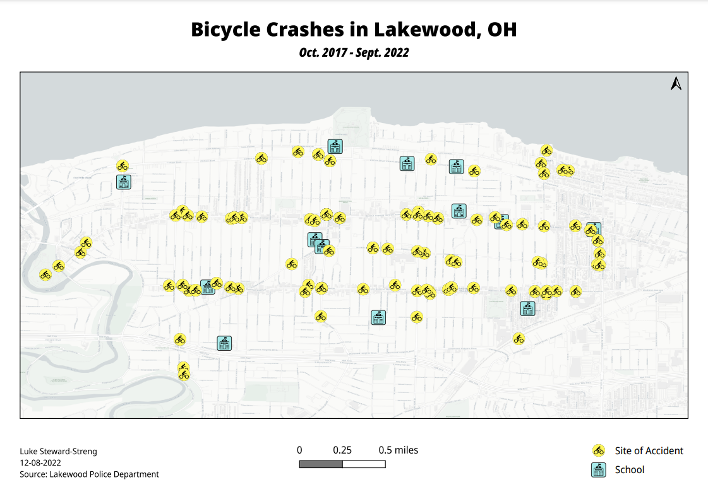

Potential Food Insecurity in Washington DC
This map presents a detailed visualization of potential food insecurity across Washington DC, highlighting areas where residents face significant challenges in accessing affordable and nutritious food. By synthesizing data on supermarket locations, income levels, poverty rates, and population density, it identifies critical food deserts—zones notably underserved by grocery stores or markets. The map also incorporates public transportation routes to illustrate the accessibility of food sources, emphasizing neighborhoods most vulnerable to food insecurity. Color gradients represent varying degrees of risk, with darker shades indicating higher levels of concern. This tool serves as a vital resource for policymakers, community organizations, and local planners, offering insights into where interventions, such as mobile food markets or subsidies for local groceries, could effectively mitigate food scarcity. Through this geographic portrayal, the map aims to foster a collaborative approach towards ensuring every resident of Washington DC has access to the basic necessity of reliable and healthy food options.

School Choice Initiative
This map is designed to advocate for school choice by displaying the percentage of public school students enrolled in public charter schools across different districts. It serves as a compelling visual tool to showcase the diversity and reach of charter schools within the educational landscape. By using varying shades to represent the percentage of charter school enrollment, the map offers a clear, at-a-glance understanding of where charter schools are making significant inroads and where there may be opportunities for growth.
The map highlights areas with higher concentrations of charter school enrollments, underscoring the demand and preference for alternative educational options among families. It also aims to stimulate conversation about educational equity, access, and the role of charter schools in providing quality education. Interactive elements may be included to allow users to explore specific data points, such as academic performance indicators, school demographics, and special programs offered, further enriching the context for school choice advocacy.
This mapping effort not only informs parents and policymakers about the current landscape of public education options but also emphasizes the importance of supporting a diverse range of educational opportunities to meet the varied needs and preferences of students and their families.

Global Freedom of Expression
This global map provides a vivid portrayal of the freedom of expression score by country, offering a visual representation of the extent to which individuals can freely express their opinions, access information, and engage in open and public communication without fear of censorship or reprisal. Each country is color-coded according to its score, with a spectrum ranging from shades of green indicating high levels of freedom, to red signaling restricted expression. The scores are derived from comprehensive assessments that consider legal, political, and economic factors influencing media freedom, speech rights, and access to information.
The map serves as a powerful tool for understanding the global landscape of expression freedom, highlighting regions where freedom of speech flourishes alongside areas where it is under significant threat. It aims to raise awareness, provoke discussion, and inspire action towards enhancing and protecting the fundamental right to free expression worldwide. By offering an at-a-glance comparison of countries, this map facilitates a deeper insight into the challenges and achievements in safeguarding this essential human right across different cultures and governments.

Library Accessability Analysis
This map is a guide to the public libraries within the city of Lincoln, Nebraska. The primary focus of the map is to evaluate the accessibility of library branches based on the 2.1 mile standard established in the LIS literature. The map incorporates an in-depth analysis layer that highlights the areas within a reasonable walking or biking distance from each library branch. These distances are calculated based on average walking and biking speeds, taking into account urban pathways and available infrastructure like sidewalks and bike lanes. The zones of accessibility are color-coded, providing a clear visual representation of the areas well-served by the current library network. Moreover, this map presents a crucial demographic analysis, identifying population segments that are underserved by the existing library locations. It uses population density data overlaid with the accessibility zones to pinpoint areas where residents may find it challenging to reach a library by foot or bike. This aspect of the map is instrumental for city planners and library services in understanding the geographic disparities in library access and planning future expansions or services to address these gaps.
Campaign Targets
This national webmap, delineated by county, is shaded to indicate the likelihood of collecting target voter signatures to gain ballot access in each state. The shading gradient, ranging from dark to bright, visually represents the spectrum of favorability, with brighter shades signifying a higher probability of supportive voters. This visualization is based on an amalgamation of recent voting patterns, demographic information, socioeconomic data, and recent polling results to forecast voting tendencies.
Each county's shade is determined through analysis that includes factors such as party affiliation, past election outcomes, voter turnout rates, and key demographic indicators like age, income, and education levels. The map served as an invaluable tool for the campaign, offering insights into regional political landscapes and helping to strategize outreach efforts more effectively.

Houston Evacuation Map
This webmap offers a critical resource for emergency planning and response, specifically tailored to hurricane scenarios in Houston. It uniquely overlays evacuation routes with a shaded representation of the estimated population of households lacking access to a car. The map uses color gradients to depict areas with varying levels of car access, with darker shades indicating higher concentrations of households without personal vehicles. These shades provide a visual guide to understand which regions may face greater challenges during evacuation efforts.
Evacuation routes are clearly marked, allowing users to identify the pathways available for leaving the city in case of a hurricane. This dual-layered approach enables emergency planners, local authorities, and residents to visualize the intersection of evacuation options with populations that may require special attention during disaster response efforts.
The webmap is designed to be interactive, allowing users to zoom in on specific areas for more detailed planning. It can serve as a valuable tool for coordinating evacuation strategies, targeting assistance to vulnerable populations, and improving overall preparedness for hurricane events in Houston. By highlighting the critical overlap between evacuation routes and carless households, the map underscores the importance of inclusive planning that ensures no one is left behind during emergency evacuations.


{kind=link}
{kind=link}